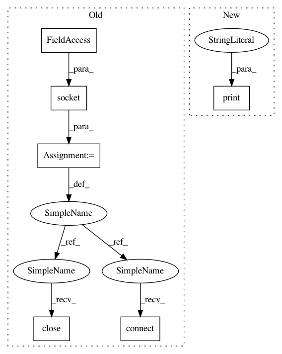

883644354ca6c016a9b79d67e0494db88a823c23,lib/streamlit/proxy/Proxy.py,,_print_remote_url,#Any#Any#,50
Before Change
except (httpclient.HTTPError, RuntimeError) as e:
// Basically if not on EC2 do a hack and try to connect to
// internet and see what the local ip is.
s = socket.socket(socket.AF_INET, socket.SOCK_DGRAM)
s.connect(("8.8.8.8", 53))
ips.append(s.getsockname()[0])
s.close()
finally:
if http_client is not None:
http_client.close()
After Change
if external_ip:
LOGGER.debug(f"proxy.externalIP set to {external_ip}")
else:
print("proxy.externalIP not set, attempting autodetect of external IP")
http_client = None
try:
http_client = httpclient.HTTPClient()
In pattern: SUPERPATTERN
Frequency: 3
Non-data size: 6
Instances
Project Name: streamlit/streamlit
Commit Name: 883644354ca6c016a9b79d67e0494db88a823c23
Time: 2018-08-14
Author: armando@playground.global
File Name: lib/streamlit/proxy/Proxy.py
Class Name:
Method Name: _print_remote_url
Project Name: streamlit/streamlit
Commit Name: 01bf5dd323bebd66b7ad60fdaee34eb8f7b76aae
Time: 2018-08-09
Author: armando@playground.global
File Name: lib/streamlit/proxy/Proxy.py
Class Name:
Method Name: _print_remote_url
Project Name: streamlit/streamlit
Commit Name: 883644354ca6c016a9b79d67e0494db88a823c23
Time: 2018-08-14
Author: armando@playground.global
File Name: lib/streamlit/proxy/Proxy.py
Class Name:
Method Name: _print_remote_url
Project Name: hanxiao/bert-as-service
Commit Name: dd3c13d51975d7ca569681dd19639473d19e8e85
Time: 2018-12-14
Author: hanhxiao@tencent.com
File Name: server/bert_serving/server/__init__.py
Class Name: BertWorker
Method Name: run1